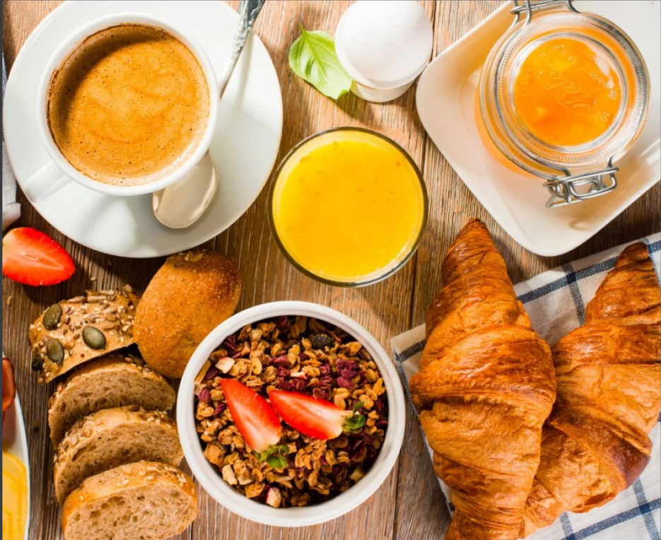
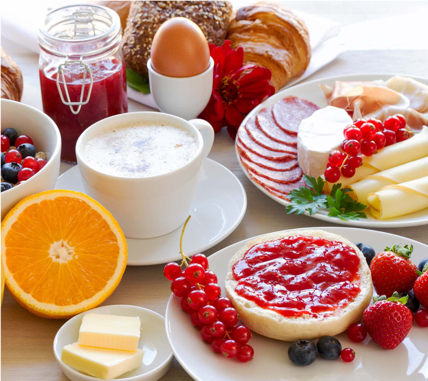
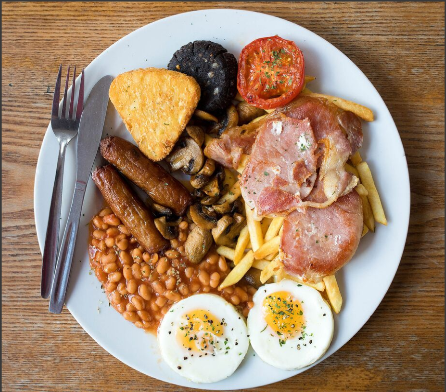
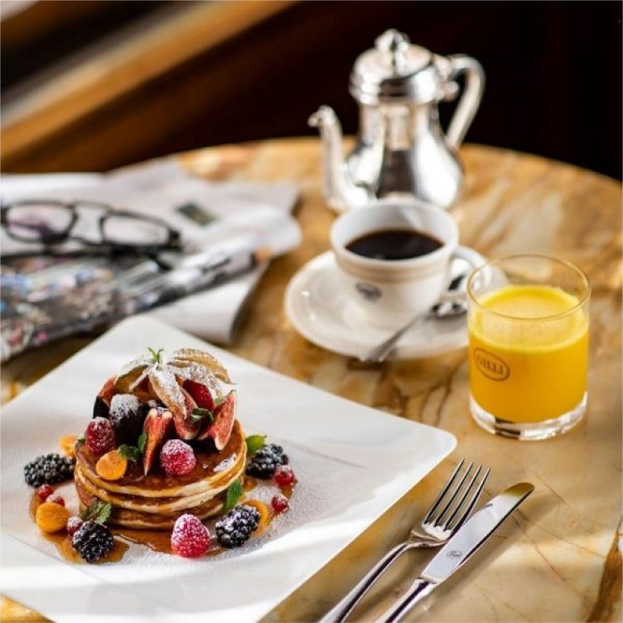
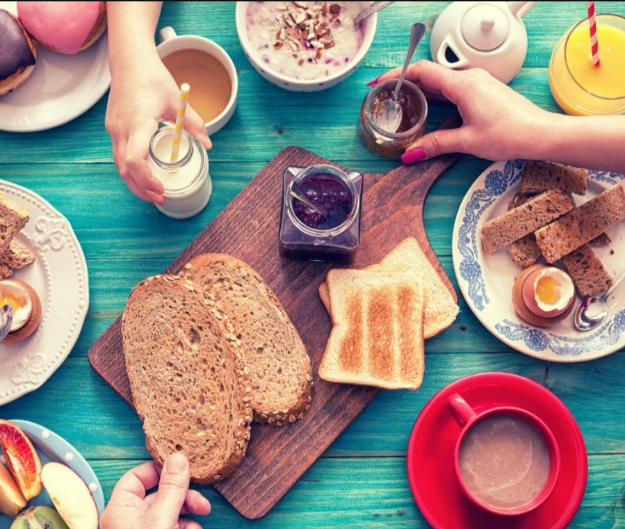

La colazione nel mondo

Colazione: cos’e? È il primo pasto della giornata e rappresenta il carburante in grado di alimentare le energie necessarie per affrontare il quotidiano.

colazione salata: colazione decisamente proteica pricipalmete basata dal consumo alterno di uova fritte, frittata, pizza focaccia pane integrale, prosciutto crudo, pancettalatte vaccino o alternative e yogurt naturale

colazione dolce: sicuramente la colazione più diffusa nel continente europeo, pasto composto dal tanto amato cornetto accompagnato dal caffé o dal cappuccino. Non mancano mai cibi come la frutta, il latte, i cerealie e lo yogura che aiutano ad un regolare ripristino della flora intestinale

colazione dolce o salata: quale preferire? Non esiste una colazione migliore tra quella dolce e salata l’importante è che sia equilibrata.
